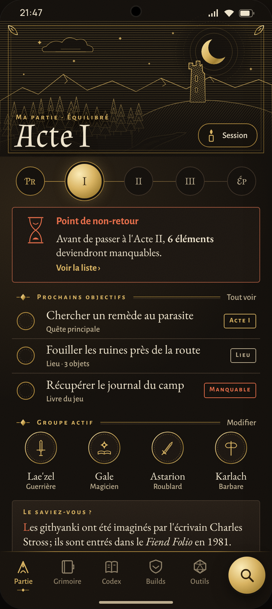
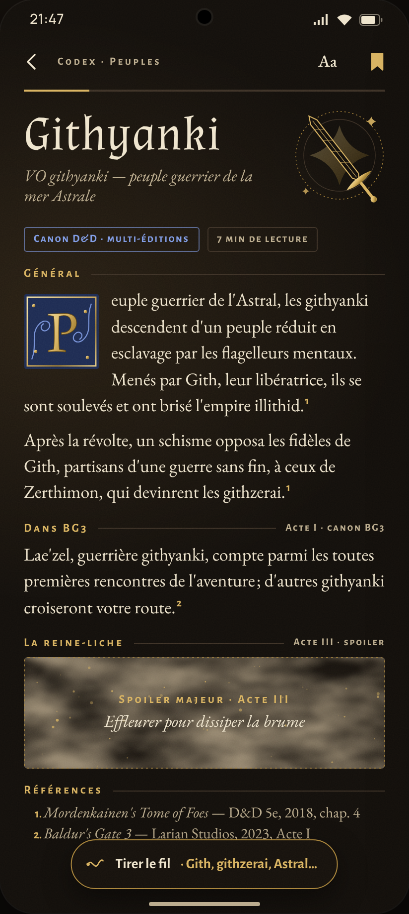
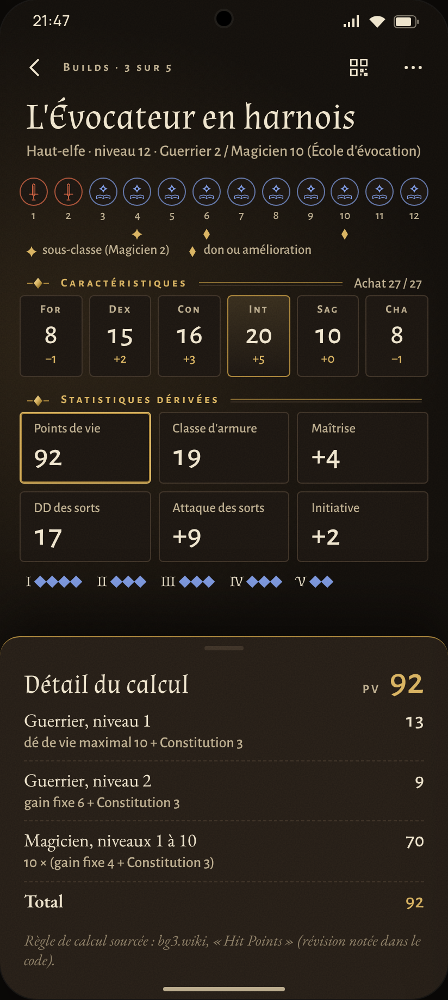
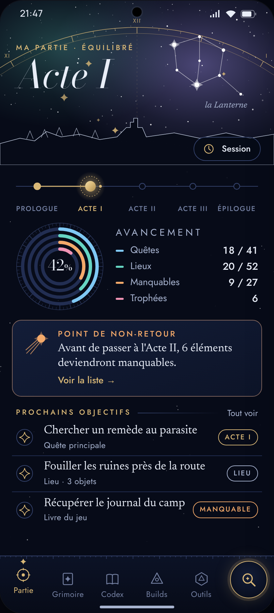
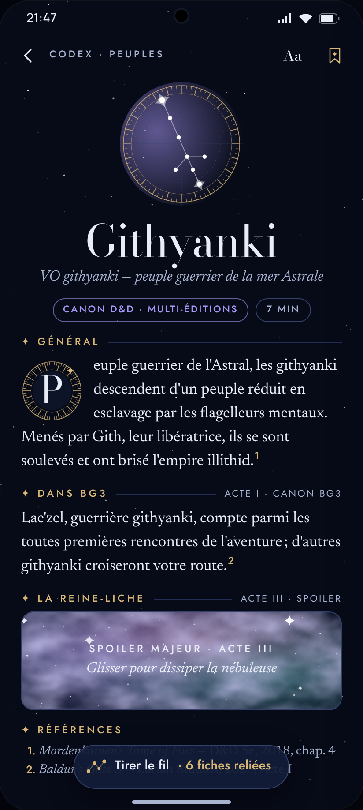
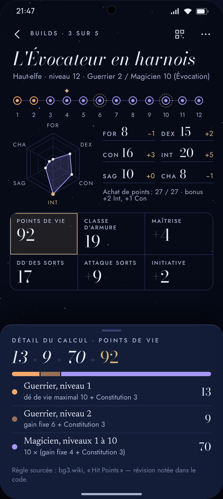
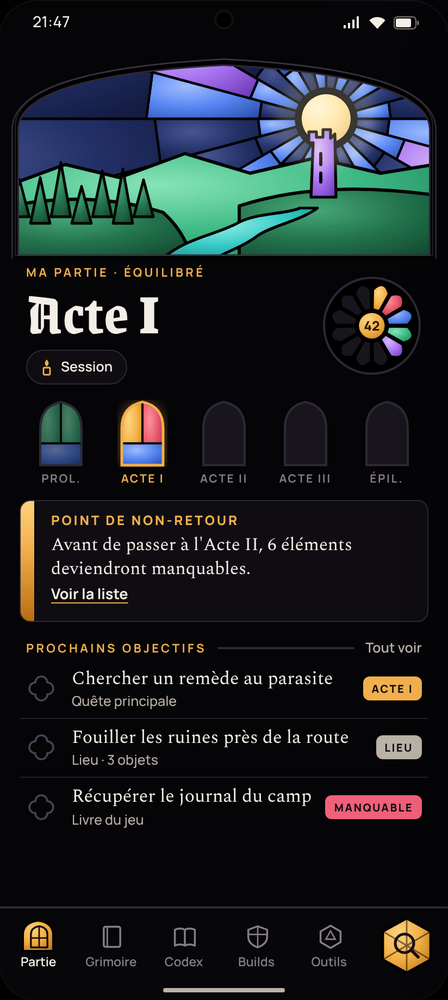
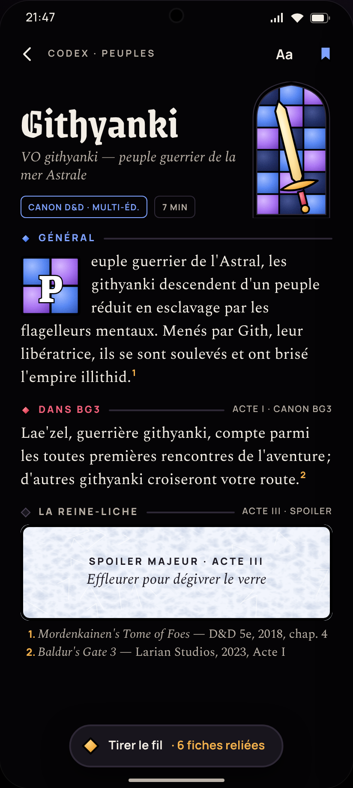
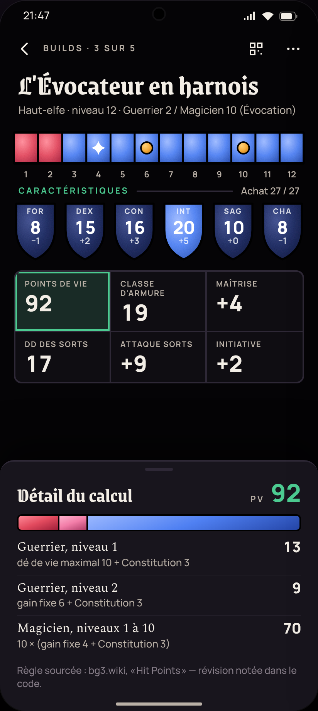

Ma partie
Fiche de lore
Planificateur de builds
A · Grimoire enluminéEncre, vélin, feuille d'or, gravure au trait, lettrines.



B · Atlas célesteNuit, laiton, cartes du ciel, astrolabe, constellations.



C · Vitrail et sceauxPlomb noir, verres de joaillerie, rosaces, sceaux de cire.


